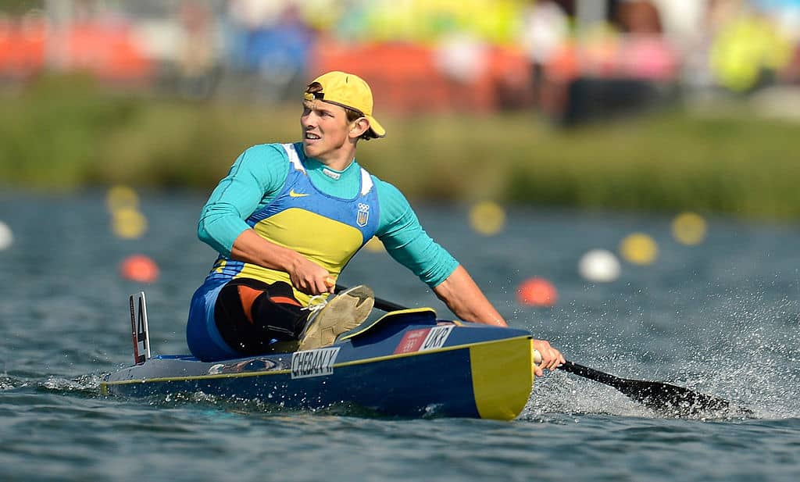

Олімпійські ігри: перемоги, якими пишається незалежна Україна
Опубліковано: 31-01-2021

Пропонуємо згадати, як наші співвітчизники прославляли країну на Олімпійських іграх за 25 років незалежної України.
1994
Національна збірна України вперше заявила про себе на світовій арені в 1994 році на зимових Олімпійських іграх в Ліллегаммері. Саме тут тендітна фігуристка Оксана Баюл завоювала першу в історії незалежної України золоту медаль.
1996
Олімпійські ігри в Атланті в 1996 році стали надзвичайно плідними на перемоги для української збірної. Спортсмени завоювали 9 золотих моделей. Лілія Подкопаєва отримала дві золоті медалі у спортивній гімнастиці, Рустам Шаріпов став найкращим у вправах на брусах. Катерина Серебрянська отримала першість в індивідуальному багатоборстві, а Євген Браславець та Ігор Матвієнко стали чемпіонами вітрильного спроту.
На Олімпійських іграх в Атланті отримав першість Володимир Кличко та важкоатлет Тимур Таймазов. Чемпіоном греко-римської боротьби став в’ячеслав Олійник. Інесі Кравець не було рівних у потрійному стрибку, за що спортсменку нагородили золотом.
2000
Зіркою Олімпійських ігор у Сіднеї стала Яна Клочкова, яка завоювала дві золоті медалі. Чемпіоном стрілецького спорту, а саме стендової стрільби, став Микола Мільчев. У 2000 році українська збірна привезла додому три золоті медалі
2004
На Олімпійських іграх в Афінах українські спортсмени реабілітувалися після Олімпіади 2000 року. Яна Клочкова повторила свій успіх, виборовши два золота у плаванні, найкращими у вільній боротьбі стали Ельбрус Тедеєв та Ірина Мерлені. У вправах на брусах та стрибках на батуті першість отримали Валерій Гончаров та Юрій Нікітін. Найсильнішою важкоатлеткою світу визнали Наталію Скакун, а Олена Костевич вразила влучністю і взяла золоту медаль у кульовій стрільбі.
2008
Олімпійські ігри у Пекіні принесли золоту медаль збірній України з фехтування у складі Ольги Жовнір, Галини Пундик, Ольги Харлан та Олени Хомрової. Артур Айвазян, Олександр Петрів та Віктор Рубан проявили надзвичайну влучність - три медалі в кульовій стрільбі та стрільбі з лука. Чемпіонкою у важкій атлетиці стала Наталія Добринська, а у веслуванні на байдарках уродженка Херсонської області Інна Осипенко-Радомська. Переше золото на Олімпіаді у Пекіні у напівлегкій вазі отримав боксер Василь Ломаченко.
2012
Олімпійські ігри у Лондоні показали Україну сильною боксерською державою. Дві Олімпіади поспіль чемпіоном став Василь Ломаченко, золото виборов Олександр Усик.

2014
Українська жіноча збірна з біатлону тримала першість на зимових Олімпійських іграх в Сочі. Олена Підгрушна, Віта Семеренко, Валентина Семеренко та Юлія Джима здобули єдину для України золоту медаль на Олімпіаді в Сочі.
2016
Олімпійські ігри в Ріо-де-Жанейро (Бразилія) відбудуться в 2016 року і пройшли з 5 по 21 серпня. Це були перші Олімпійські ігри, що проходили в Південній Америці Це була одна з найкращих олімпіад для української олімпійської збірної.

Золоті медалі здобули Юрій Чебан, Олег Верняєв та ряд інших спортсменів.
2018
А ось тут пропонуємо Вам (учням дистанційного навчання) самим дослідити участь України на зимових олімпійських іграх 2018 та розповісти у формі реферату про найбільш медальні види спорту для України.
Також пропонуємо Вашій увазі переглянути наступні відео: